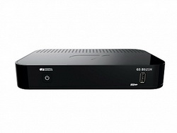

«Триколор ТВ» — крупнейший российский оператор цифрового телевидения. Компания является лидером российского рынка платного телевидения (29%). В спутниковом сегменте доля оператора — порядка 75%. Зрительская аудитория — около 40 млн человек, а значит, «Триколор ТВ» смотрит примерно каждый четвертый житель страны.
Оборудование
Сервер E501

6000 руб.
Подробнее
ПрошивкаСервер E502

7500 руб.
Подробнее
ПрошивкаСервер B521H
6500 руб.
Подробнее
ПрошивкаСервер B532M

6000 руб.
Подробнее
DTS-54

2900 руб.
Подробнее
Клиент С592

3000 руб.
Подробнее
Клиент С5911

3000 руб.
Подробнее
Система для приема цифрового спутникового телевидения GS E501/GS C5911

8000 руб.
Прошивки
GS E501 GS c501Модуль условного доступа Conditional Access Module CI+

5000 руб.
Подробнее
Акция при первичном подключении
В период с 1 ноября 2017 года по 31 марта 2018 года у участников акции «Старт. Сверхвыгодная рассрочка!» есть возможность получить современный комплект оборудования для просмотра «Триколор ТВ» всего за 399 рублей в месяц! В комплект входит приёмник с двумя тюнерами, который позволяет просматривать телеканалы не только на одном телевизоре, но и на планшете, смартфоне, с помощью игровой консоли GS Gamekit, а также на втором телевизоре при подключении еще одного HD-приёмника (приёмника-клиента).

 Подробнее
Подробнее
Акции по обмену
Сверхвыгодный обмен в рассрочку
с 02 Октября 2017 по 31 Марта 2018
Рассрочка без переплат: всего 199 руб. в месяц за обмен приёмника вместе с абонентской платой за пакет «Единый» в течение 25 месяцев.
Подробнее
Обмен на комплект для просмотра на двух экранах
с 01 Февраля 2017 по 31 Декабря 2018
Комплект для просмотра каналов «Триколор ТВ» на двух экранах и возможностью использования современных сервисов.
Подробнее
Обмен на двухтюнерный приёмник
с 01 Февраля 2017 по 31 Декабря 2018
Современный HD-приёмник с возможностью записи эфира и подключения мобильных устройств.
Подробнее
Обмен на CI+ модуль
с 01 Февраля 2017 по 31 Декабря 2018
Компактный модуль с возможностью просмотра телеканалов в формате Ultra HD.
 Подробнее
Подробнее
Обмен на комплект с игровой приставкой
с 25 Июля 2017 по 31 Декабря 2018
В обмен на старое оборудование вы получите спутниковый двухтюнерный приёмник модели GS B521, GS B531M, GS B531N или GS B533M в комплекте с игровой приставкой с функцией приёма цифрового телевидения GS GAMEKIT.
Подробнее
Установка
Производится в Таганроге, Неклиновском и Матвеево-Курганском районах
Гарантия
Все гарантийные обязательства от производителя (электронная 12 мес.) + послегарантийная (платная).
Пакеты услуг

«Единый» (1200 руб. в год), «Единый Мульти Лайт» (1500 руб. в год) и «Единый Мульти» (2000 руб. в год). 218 каналов, 38 в формате HD, 47 радиостанций.
Подробнее
«Экстра» (2000 руб. в год, 1200 руб. за 180 дней). 221 канала, 40 в формате HD, 47 радиостанций
Подробнее
«Единый Ultra HD» (2000 руб. в год). 224 канала, 38 в формате HD, 6 в формате UHD, 47 радиостанций.
Подробнее


Телепрограмма
Спутниковый интернет
Спутниковый интернет помогает там, где отсутствует или недостаточно развита наземная телекоммуникационная инфраструктура, например, в загородном доме или удаленном коттедже. Спутниковое подключение можно использовать для передачи телеметрической информации, видеонаблюдений и видеоконференций, поиска необходимых данных или просто для собственного развлечения.
ПодробнееАдреса:
Магазины Антенный Мир
Таганрог, Гоголевский 29а, Центральный рынок
Вторник-воскресенье с 8 до 15


Таганрог, Пархоменко 7-19
Вторник-воскресенье с 10 до 18.30


Таганрог, Пархоменко 7-20, "Салон-Магазин Триколор ТВ"
Вторник-воскресенье с 10 до 18.30